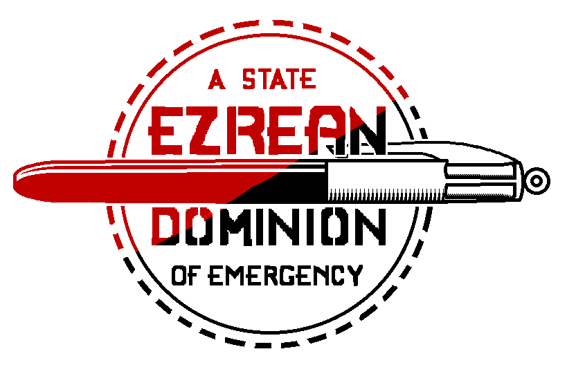

May the light of King Ezra illuminate our path and blind our enemies.
Dominion City

Population: ????
Established: 22 March, 2015
Area: ????
Dominion City is the capital and largest city in the Ezrean Dominion. Established in 2015 on the south coast of Lake Central, the city now occupies much of the southern and eastern coast of Lake Central and extends far south and east across several land and river systems.